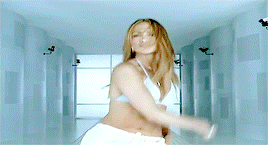

Strays
I used to have beef with cats.
Once upon a time, a stray moved in underneath our house, birthed 5 kittens and slaughtered every birds and squirrel is could kill while leaving animal bits behind for us. Although I was perturbed by our new house guests, I like to think them not paying a single ¢ had more to do with it than the dead carcasses and destruction of our rose garden.
Years removed from their cinderblock eviction, I learned something fascinating about them that has me rethinking my actions...
According to my best friend, a longtime cat owner, you can leave them alone for DAYS (!) at a time and they will self-sustain. Thinking back, I should have already figured this out because duh, they were pretty sufficient under the house, but I digress... Why does this any of this matter? Well, it doesn't, but that self-sufficiency part is more than I can say for my two dogs. Dogs are needy. More needy than a newborn, and that's what makes them the "forever toddler."
So, if you are like me, and like to move freely around the world commitment free, don't get a pet. But if you are like my husband, and you must, make it a fish.
Spaghetti
When I was younger, my favorite food was a spaghetti. Even at a young age, I knew all chefs weren't created equal - as far as I was concerned, mom made the best spaghetti on the planet - it was the only thing that I would order when we'd go out to eat.
As I matured, I thought that I would grow out of my love for spaghetti, but that never happened. In fact, my love for spaghetti grew and I became more passionate about making spaghetti just as good (if not better) than moms! Alas, after many hours in the kitchen, I perfected it...the perfect "spicy spaghetti" recipe. Then, one day, I invited people into my life. A family of my very own, who, in fact, did not share my same love of spaghetti. They would actually request it NOT to be made. Disgrace! Shame! I went from eating spicy spaghetti weekly, to quarterly, if I was lucky.
Moral of the story: Eating things you like is an act of self-love. Cook the food that feeds your soul.
Music
Smooth jazz. Pop. Holiday. Rap. R&B. Classical. Funk. Reggae. I have an electic taste in music. Whatever the vibe is seeking in the moment becomes the playlist that takes centerstage.
As a small child, I used to play the same cd on repeat during the Holidays. It's so fried into my brain that now, when I hear certain holiday songs in isolation, I am automatically expecting the next song to be that in the order from the cd. As a youth, my grandparents bought me a piano and an organ - I even took lessons for the latter. When I got my first radio, I would play "WDAS smooth jazz" station as I fell asleep. I remember J.Lo's "On the 6" album, oh & Monica's "The first night" single being some of my first store buys. I recall when I met my husband, and he helped me understand all the reggae lyrics that soundtracked my teenage house parties, lyrics I had been making up for years. Or how the first dance with my father on my wedding day, was to a song we (read: "I") played on repeat many a roadtrip. Gosh, I love The Spinners. I think often about how I played music, out loud on my stereo at home, but now how my children listen to their exclusively in their headphones.
Music has taught me so much, but most importantly, never let your older sibling borrow your brand new Luda "Back for the first time" cd before you've given it a third spin, because you will never see it again.
